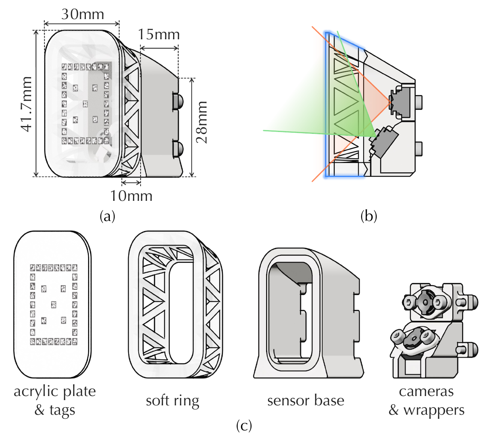
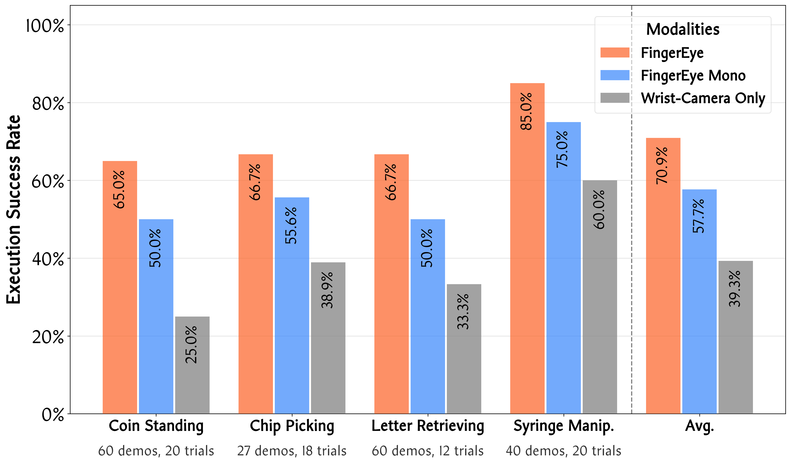
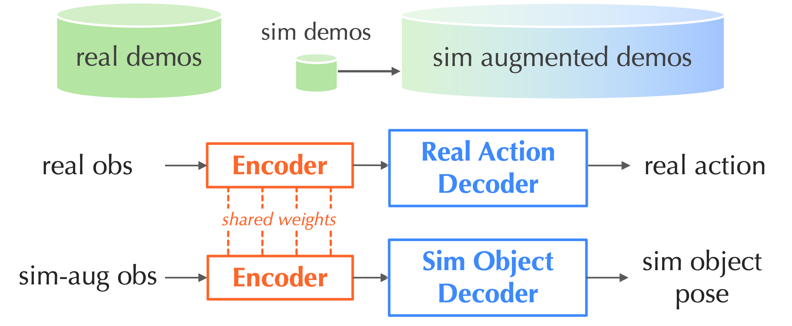
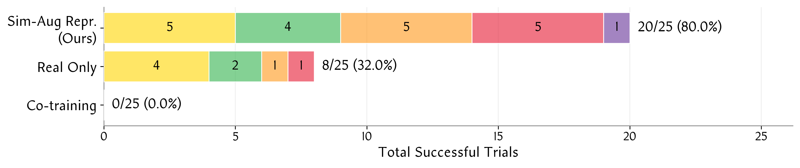

Hardware System Overview

Narration included.
Hardware System Overview

Exploded View
Eccentric Force Sensing
Lateral Force Sensing
Light Robustness(50% Cover)
Light Robustness(100% Cover)
Each clip shows one target object in the delicate grasp setting.
Balloon
Chips Bag
Cones
Cookies
Eggs
Grape
Paper
Paper Cup
Pencil
Seaweed



Yellow
Green
Orange
Red
Purple
Dexterous robotic manipulation requires comprehensive perception across all phases of interaction: pre-contact, contact initiation, and post-contact. Such continuous feedback allows a robot to adapt its actions throughout interaction. However, many existing tactile sensors, such as GelSight and its variants, only provide feedback after contact is established, limiting a robot's ability to precisely initiate contact. We introduce \ours, a compact and cost-effective sensor that provides continuous vision-tactile feedback throughout the interaction process. \ours integrates binocular RGB cameras to provide close-range visual perception with implicit stereo depth. Upon contact, external forces and torques deform a compliant ring structure; these deformations are captured via marker-based pose estimation and serve as a proxy for contact wrench sensing. This design enables a perception stream that smoothly transitions from pre-contact visual cues to post-contact tactile feedback. Building on this sensing capability, we develop a vision-tactile imitation learning policy that fuses signals from multiple \ours sensors to learn dexterous manipulation behaviors from limited real-world data. We further develop a digital twin of our sensor and robot platform to improve policy generalization. By combining real demonstrations with visually augmented simulated observations for representation learning, the learned policies become more robust to object appearance variations. Together, these design aspects enable dexterous manipulation across diverse object properties and interaction regimes, including coin standing, chip picking, letter retrieving, and syringe manipulation.
TODO